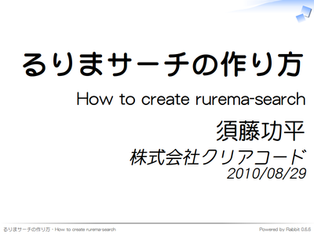
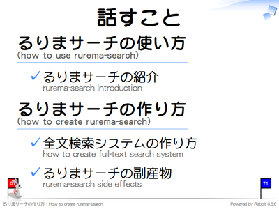
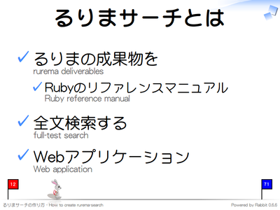
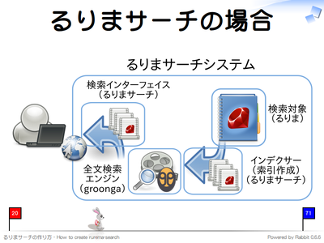
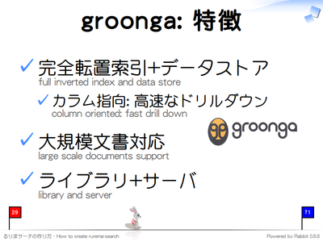
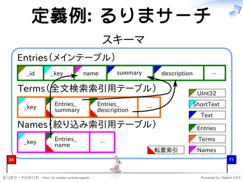
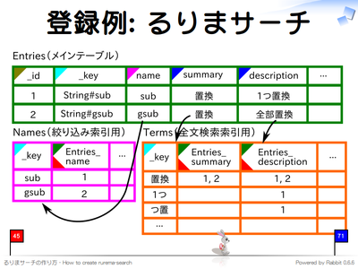
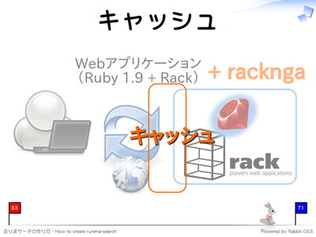
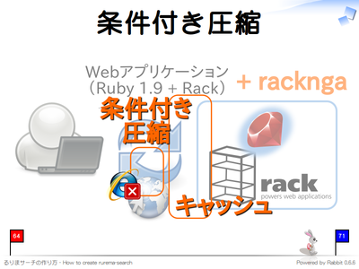
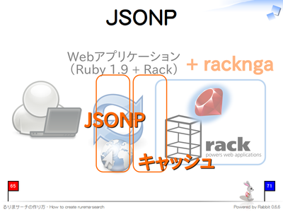

るりまサーチの作り方 - Ruby 1.9 で groonga 使って全文検索
るりまサーチの作り方 - Ruby 1.9 で groonga 使って全文検索

3 日目の 13:30-14:00 に中ホールで行われた るりまサーチの作り方 - Ruby 1.9 で groonga 使って全文検索 のまとめです。これを読むだけで内容がわかるようになっているので、残念ながら参加できなかった方はこのまとめか 動画 を見てください。
それでは、当日使用したスライドと併せてまとめていきます。
概要

資料の中では、まず、るりまサーチについて説明し、その後、全文検索システムとしてのるりまサーチをどう作るのかを説明しています。
るりまサーチとは

るりまサーチは Ruby リファレンスマニュアル刷新計画 (通称るりま) の成果物である Ruby 本体のリファレンスマニュアルを全文検索するための Web アプリケーションです。るりまサーチが必要とされていた理由は、既存のリファレンスマニュアル閲覧 Web アプリケーションに組み込まれていた検索機能の速度が遅かった1からです。せっかく有益なリファレンスマニュアルがあっても、目的のエントリにたどりつくのが難しければ、有効に活用することができません。検索機能の面からリファレンスマニュアルの有効活用を支援する全文検索システムがるりまサーチです。
ポイント: ドリルダウン

るりまサーチは Ruby のリファレンスマニュアルに特化した小さな全文検索システムですが、最近の全文検索システムにとって重要なエッセンスが含まれています。全文検索システムを開発する場合はこれらのエッセンスを含めることを検討してみてください。
まず 1 つ目はドリルダウンと呼ばれる機能です。Solr など他の全文検索システムによってはファセットと呼ぶこともあります。ドリルダウンとは、通常の検索結果に加えて、別のパラメータでの絞り込み結果も同時に提供する機能です。スライド中では「Ruby のバージョンで絞り込んだ結果、何件ヒットするか」という情報も表示しています。
この機能で嬉しいことは以下の 2 点です。
- 検索キーワードを入力しなくてもクリックだけで結果を絞り込んでいける。
- 絞り込み結果が 0 件になる条件を除外するので、「絞り込んだ後に 0 件ヒットになる」無駄な条件を指定せずに済む。
どちらもユーザの使い勝手を向上させるインターフェイスにつながります。ショッピングサイトなどでも使われているインターフェイスですね。
ポイント: URL

2 つ目は URL のパスに絞り込み条件を含めることです。これは、内部ネットワーク用の全文検索システムではなく、インターネット上に公開する全文検索システム向けです。
最近では URL に UTF-8 でエンコードされたページ情報を含めることは一般的になってきました。Wikipedia や Amazon でも行っています。Web 検索エンジンは URL からも検索用の情報を抽出しているようなので、SEO になると考えられます。
ポイント: キャッシュ

3 つ目はキャッシュです。より快適に検索・絞り込みを行うにはできるだけ速いレスポンスが求められます。レスポンスを高速化するためには、以下のような方法があります。
- アルゴリズムを改良し、少ない計算量で結果を計算できるようにする。
- 同じ結果を返す処理の処理結果を保存して、2 回目以降の処理で結果を再利用する。
手軽に高速化する場合は後者のキャッシュ機能が便利です。キャッシュをする場合はキャッシュを無効化するタイミングを慎重に検討する必要があります。このタイミングを誤ると、期待した結果が返ってこないという問題が発生します。
キャッシュを無効にするタイミングはアプリケーションに依存します。一般的に、データが変更されるまでは同じキャッシュを利用できます。るりまサーチの場合は 1 日 1 回バッチ処理で元データを更新しています。そのため、同じキャッシュを 1 日使いまわすことができます。これにより高速にレスポンスを返すことができます。
また、キャッシュの効果を高めるためには、処理の内部よりもクライアントに近いところでキャッシュする必要があります。その方がより多くの計算を省略することができるからです。るりまサーチはログインせずに使えるシステムなので、同じ検索リクエストの結果はクライアントに関わらず同一になります。そのため、レスポンスをまるごとキャッシュすることができ、とても高い効果があります。
ログインが必要なシステムの場合は、クライアント毎に変更される部分のみ JavaScript で動的に生成したり、iframe を用いて別 HTML にすることにより、ログインによって変更されない部分ではキャッシュを利用することができます。それが難しい場合はもっと処理の内部でキャッシュをすることになります。この場合はキャッシュの効果が薄くなります。
キャッシュを用いることにより劇的にレスポンス速度を改善することができますが、キャッシュの有効期限とキャッシュする場所についてはよく検討する必要があります。
ポイント

るりまサーチに含まれている最近の全文検索システムに重要なエッセンスは以下の 3 つです。
- ドリルダウン
- URL に検索条件を含める
- キャッシュ
それでは、このようなエッセンスを含む全文検索システムるりまサーチの作り方について説明します。
全文検索システム

全文検索システムは以下の 5 つの要素からなります。
- 検索対象
- クローラー
- インデクサー
- 全文検索エンジン
- 検索インターフェイス
まず、クローラーが検索対象から文書を収集します。次に、インデクサーが、クローラーの収集した文章からテキストやメタ情報を抽出して全文検索エンジンに登録します。検索インターフェイスは、ユーザが検索する際に、全文検索エンジンに登録したデータからユーザが求めるデータを提示します。
るりまサーチの場合

るりまサーチの場合は以下のようになります。
- 検索対象
- リファレンスマニュアル。
- クローラー
- リファレンスマニュアルはリポジトリからチェックアウトするので必要なし。
- インデクサー
- BitClust に含まれる機能を使ってリファレンスマニュアルの情報を全文検索エンジンに登録する。新規開発。
- 全文検索エンジン
- groonga。
- 検索インターフェイス
- Ruby 1.9 と Rack を用いた Web インターフェイス。新規開発。
この中で、るりまサーチの重要な部分である全文検索エンジン groonga について説明します。
groonga: 特徴

発表当日に初のメジャーバージョン 1.0.0 がリリース された groonga は、MySQL との組み合わせで広く利用されている Senna の後継プロジェクトです。Senna でのよいところを維持しつつ、さらに改良が加えられています。
Senna は妥協しない転置索引実装と参照ロックしない更新アルゴリズムによるリアルタイム検索の実現が大きな特徴でした。Senna 自体はデータストア機能を持たず、MySQL など外部のデータストアと連携します。MySQL と Senna を連携させるソフトウェアは Tritonn と呼ばれ、SQL で高速な全文検索機能を利用できることから広く使われています。しかし、MySQL 側のロックモデルのため常に検索可能な状態で更新処理を行うことができません。そのため、せっかくの Senna の参照ロックフリーな更新アルゴリズムの特徴を活かしきれませんでした。
そこで、groonga では独自のデータストア機能を提供し、外部のシステムによる制限を回避して groonga の性能を発揮できるようにしました。データストアはドリルダウンを高速に実現できる カラム指向 を採用しています。
また、HTTP/memcached/ 独自プロトコルなどのネットワークプロトコルも実装し、Solr のように検索サーバとして利用することもできるようになっています。
その他にも、より大規模な文書に対してもスケールするような性能改善や、モバイル端末の普及により重要性が増している位置情報データに対応するなど新規機能が含まれています。ただし、これらの改善のために Senna との互換性がなくなっています。Senna の後継として groonga と名前を変更した理由はこのためです。
定義例: るりまサーチ

それでは、るりまサーチのケースを例にして groonga の使い方を説明します。手順は以下の通りです。
- スキーマ定義
- データ登録
- 検索
RDB と同じように groogna でも、まず、スキーマを定義します。
スキーマは RDB と同じように以下の 3 つの要素から構成されます。
- テーブル
- カラム
- 型
RDB では、上記の他に索引という特別な存在もあります。groonga にも索引はありますが、上記の 3 つの要素を使って作成するので、RDB の索引ほど特別な存在ではありません。
スキーマを定義するときは、まず、検索対象がなにかを考えます。そして、その対象がどのくらいの粒度で 1 エントリになるかを考えます。るりまサーチではリファレンスマニュアルが検索対象で、メソッドやクラスそれぞれが 1 つのエントリになります。検索対象全体をテーブルとし、エントリをテーブルの各レコードにします。るりまサーチでは検索対象全体を扱う「Entries」テーブルを定義しています。
テーブルには検索結果に表示したい内容と検索時に利用する内容をカラムとして定義します。るりまサーチの場合にはメソッド名やクラス名を格納する「 name 」カラムやドキュメントを格納する「 description 」カラムなどを定義しています。
検索対象用のテーブルを定義したら索引を定義します。ここが RDB と異なる部分です。全文検索用の索引では単語と文書を対応させる語彙表が必要になりますが、同じトークナイザー2を利用している場合は同じ語彙表を共有して省スペース化したり、同じテキストに複数のトークナイザーを適用して検索精度や検索漏れのトレードオフを調整したり、といった RDB よりも細かい制御ができます。
単にヒットしたかどうかではなく、検索結果の重み付けも重要です。有用な検索結果を提供するためには、クエリに適していると思われる結果ほど上位に提示する必要があります。しかし、どのように重み付けをするのが適切かは全文検索システムに大きく依存します。そのため、groonga では索引毎に重み付けをカスタマイズする機能を提供しています。
るりまサーチではメソッド名やクラス名に完全一致した場合はよりマッチしていると判断するように3、名前と完全一致だけする語彙表「Names」テーブル4を定義し、そこに「 name 」カラムの索引を定義します。検索時にはこの索引にマッチした場合は重み付けを大きくします。
ドキュメント部分 (「summary」カラムと「description」カラム) はトークナイザーを設定した全文検索用の語彙表「Terms」テーブルを共有しています。こっちの索引にマッチした場合は重み付けを小さくします。
スキーマは groonga が提供している組み込みの DDL で定義する方法と、groonga の Ruby バインディングである rroonga が提供する DSL で定義する方法があります。
- groonga の DDL
# 検索対象のテーブル
table_create Entries TABLE_HASH_KEY ShortText
# 全文検索用の語彙表。トークナイザーとしてN-gramを使用。
table_create Terms TABLE_PAT_KEY ShortText --default_tokenizer TokenBigram
# 完全一致検索用の語彙表。トークナイザーはなし。
table_create Names TABLE_HASH_KEY ShortText
# 検索対象のデータ格納場所
column_create Entries name COLUMN_SCALAR Names
column_create Entries summary COLUMN_SCALAR Text
column_create Entries description COLUMN_SCALAR Text
# 全文検索用の索引
column_create Terms Entries_summary COLUMN_INDEX|WITH_POSITION Entries summary
column_create Terms Entries_description COLUMN_INDEX|WITH_POSITION Entries description
# 完全一致検索用の索引
column_create Names Entries_name COLUMN_INDEX|WITH_POSITION Entries name
- rroonga の DSL
Groonga::Schema.define do |schema|
# 完全一致検索用の語彙表。トークナイザーはなし。
schema.create_table("Names",
:type => :hash,
:key_type => "ShortText") do |table|
end
# 検索対象のテーブル
schema.create_table("Entries",
:type => :hash,
:key_type => "ShortText") do |table|
table.reference("name", "Names")
table.text("summary")
table.text("description")
end
# 全文検索用の語彙表。トークナイザーとしてN-gramを使用。
schema.create_table("Terms",
:type => :patricia_trie,
:key_type => "ShortText",
:default_tokenizer => "TokenBigram",
:key_normalize => true) do |table|
# 全文検索用の索引
table.index("Entries.summary", :with_position => true)
table.index("Entries.description", :with_position => true)
end
schema.change_table("Names") do |table|
# 全文検索用の索引
table.index("Entries.name", :with_position => true)
end
end
登録例: るりまサーチ

スキーマを定義したらデータを登録します。索引は自動で更新されるため、データ用のカラムにデータを登録するだけで動作します。
データの登録方法は groonga の load コマンド を使う方法と、rroonga を使う方法があります。
- groonga の load コマンド
load --table Entries
[
["_key", "name", "summary", "description"],
["String#sub", "sub", "置換", "1つ置換"],
["String#gsub", "gsub", "置換", "全部置換"]
]
- rroonga
entries = Groonga["Entries"]
entries.add("String#sub",
name: "sub",
summary: "置換",
description: "1つ置換")
entries.add("String#gsub",
name: "gsub",
summary: "置換",
description: "全部置換")
Ruby で登録データの前処理を行う場合は rroonga を使う方がよいでしょう。Ruby 以外で処理を行う場合はデータから JSON を生成し、groonga の load コマンドを使う方がよいでしょう。るりまサーチは Ruby で前処理5をしているので rroonga でデータを登録しています。
検索例: るりまサーチ

全文検索する場合は検索対象のカラムを指定する方法と、明示的に利用する索引を指定する方法の 2 通りあります。カラム単位で重み付けをしたい場合はカラムを指定し、索引単位で重み付けをしたい場合は索引を指定します。両方の指定方法を混ぜ合わせることもできます。
データの登録方法は groonga の select コマンド を使う方法と、rroonga を使う方法があります。
- groonga の select コマンド
# 「description」カラムに「1つが」含まれているエントリを検索
select Entries description "1つ"
[[...],
[[[...],
[..., ["_key", ...], ["name", ...], ["summary", ...], ["description", ...], ...]],
[..., "String#sub", "sub", "置換", "1つ置換", ...],
...]]
# 「sub」が含まれているエントリを検索。ただし、「name」が
# 「sub」だった場合は重みを大きくする。
select Entries "name * 100 | summary | description" "sub"
[[...],
[[[...],
[..., ["_key", ...], ["name", ...], ["summary", ...], ["description", ...], ...]],
[..., "String#sub", "sub", "置換", "1つ置換", ...],
...]]
- groonga の select コマンド (HTTP 経由)
# 「description」カラムに「1つが」含まれているエントリを検索
% wget -O - 'http://localhost:10041/d/select?table=Entries&match_columns=description&query=1つ'
[[...],
[[[...],
[..., ["_key", ...], ["name", ...], ["summary", ...], ["description", ...], ...]],
[..., "String#sub", "sub", "置換", "1つ置換", ...],
...]]
# 「sub」が含まれているエントリを検索。ただし、「name」が
# 「sub」だった場合は重みを大きくする。
% wget -O - 'http://localhost:10041/d/select?table=Entries&match_columns=name*100|summary|description&query=sub'
[[...],
[[[...],
[..., ["_key", ...], ["name", ...], ["summary", ...], ["description", ...], ...]],
[..., "String#sub", "sub", "置換", "1つ置換", ...],
...]]
- rroonga
entries = Groonga["Entries"]
# 「description」カラムに「1つ」が含まれているエントリを検索
result = entries.select do |record|
record.description =~ "1つ"
end
# 「sub」が含まれているエントリを検索。ただし、「name」が
# 「sub」だった場合は重みを大きくする。
result = entries.select do |record|
target = record.match_target do |match_record|
(match_record["name"] * 100) |
(match_record["summary"]) |
(match_record["description"])
end
target =~ "sub"
end
PHP など Ruby 以外の言語から利用する場合は groonga サーバを立てて、HTTP 経由で検索するのがよいでしょう。Ruby から利用する場合は、select コマンドで十分なら select コマンドを利用、より複雑なことをしたい場合は rroonga を利用するのがよいでしょう。select コマンドでもドリルダウンはサポートされて入るので、多くの場合は select コマンドで十分でしょう。
るりまサーチでは、select コマンドが提供するクエリ書式を利用したくない、rroonga が提供するページネーション機能を利用したい、などの理由で select コマンドではなく rroonga を使っています。rroonga を利用してドリルダウンを実現する例にもなっています。
るりまサーチを例にして、groonga を用いて全文検索システムを開発する場合の基本的な流れを説明しました。より詳しいことは GitHub のるりまサーチのリポジトリ にあるソースコードを見てください。
racknga

るりまサーチの検索 Web インターフェイスは Ruby 1.9 と Rack の上に構築されています6。るりまサーチを開発した際に、るりまサーチ以外でも使えそうな部分がでてきたので、racknga という名前でるりまサーチと別パッケージとして公開しています。
racknga には Rack のミドルウェアと Munin プラグインが含まれています。Munin のプラグインは Passenger の以下の情報を収集します。
- 処理したリクエスト数
- 処理中のリクエスト数
- プロセスの状態
- プロセスの起動時間
Rack のミドルウェアは 1 つずつ説明します。
エラー通知

アプリケーション内でエラーが発生した場合にメールでその内容を通知するミドルウェアです。Rails の Exception Notifier の Rack 用です。
以下のように利用します。
- config.ru
require 'racknga'
notifier_options = {
"host" => 127.0.0.1,
"from" => "rurema@example.com",
"to" => "developer@example.com",
"charset" => "iso-2022-jp",
"subject_label" => "[るりまサーチ] ",
}
notifiers = [Racknga::ExceptionMailNotifier.new(notifier_options)]
use Racknga::Middleware::ExceptionNotifier, :notifiers => notifiers
# ...
run your_application
できるだけ多くのエラーを検出するためになるべく最初の方で_use_してください。
キャッシュ

主にサーバ 1 台や 2 台などで処理できる程度の中規模の Passenger 環境で利用することを想定したキャッシュミドルウェアです。ヘッダーやボディを含め HTTP のレスポンス全体を groonga のデータストアにキャッシュします。Passenger では複数のインスタンスが別プロセスで起動しますが、groonga は複数プロセス間で同一のデータベースを操作することができるため、別のインスタンスがキャッシュした内容を他のインスタンスから参照することができます。以下のように利用します。
- config.ru
require 'racknga'
require 'racknga/middleware/cache'
# ...
# use Rack::Deflater
# use Rack::ConditionalGet
# ...
base_dir = Pathname.new(__FILE__).dirname.cleanpath.realpath
cache_database_path = base_dir + "var" + "cache" + "db"
use Racknga::Middleware::Cache, :database_path => cache_database_path.to_s
run your_application
他のミドルウェアと組み合わせやすいように、なるべくアプリケーションに近い部分に置くことをよいでしょう。
複数のサーバ間でキャッシュを共有したい場合は別の仕組みを利用することをオススメします。
条件付き圧縮

ネットワーク帯域を節約するためには、レスポンスを圧縮して返すことが有効です。しかし、Internet Explorer 6 では問題があることがわかっています。そのため、Internet Explorer 6 の場合は常に圧縮しないようにするのがこのミドルウェアです。_Rack::Deflater_のラッパーです。以下のように利用します。
- config.ru
require 'racknga'
# ...
use Racknga::Middleware::Deflater
# use Rack::ConditionalGet
# ...
run your_application
JSONP

Web API としてサービスを提供する場合、JSON 形式で結果を返すことが多くなっています。クライアント側で Web API にアクセスする場合は JSONP を利用することになります。
このミドルウェアは JSONP に対応しておらず単に JSON データを返すだけのアプリケーションを JSONP に対応させることができます。また、以下のような配置にすることにより、キャッシュを有効にしたまま JSONP 対応にすることができます。
- config.ru
require 'racknga'
require 'racknga/middleware/cache'
use Rack::Middleware::JSONP
base_dir = Pathname.new(__FILE__).dirname.cleanpath.realpath
cache_database_path = base_dir + "var" + "cache" + "db"
use Racknga::Middleware::Cache, :database_path => cache_database_path.to_s
run your_application # "Content-Type: application/json"のレスポンスを返す
現在、るりまサーチは Web サービスを提供していませんが、将来の拡張を念頭においてこのミドルウェアが racknga に含まれています。
まとめ

るりまサーチはドリルダウンやキャッシュを利用することにより、快適に目的のドキュメントへ到達できるような工夫をしています。るりまサーチ以外にもリファレンスマニュアルを利用するツールがあるので有効活用しましょう。
ドリルダウンを効果的に利用した高速な全文検索システムには groonga が適しています。Ruby との親和性も高い groonga で全文検索システムを開発してみてはいかがでしょうか。汎用ユーティリティである racknga も一緒に用いることにより開発・運用が改善されるでしょう。
最後にお知らせです。クリアコードでは プログラミングが好きな開発者を募集 しています。プログラミングが好きな人は検討してみてください。

スライドの一覧は以下にあります
http://www.clear-code.com/archives/RubyKaigi2010/